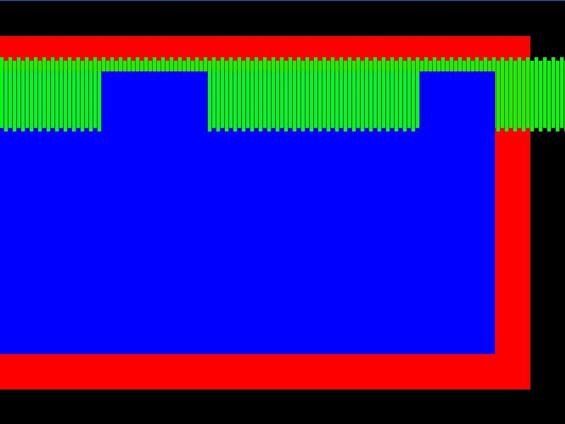

IPcorp
When I do so:
#include <Urho3D\Engine\Application.h>
#include <Urho3D\Input\Input.h>
#include <Urho3D\UI\UI.h>
struct Temp : Urho3D::Application {
Temp(Urho3D::Context *context) : Urho3D::Application(context) {}
void Setup() {
engineParameters_["FullScreen"] = false;
engineParameters_["WindowWidth"] = 800;
engineParameters_["WindowHeight"] = 600;
}
void Start() {
GetSubsystem<Urho3D::Input>()->SetMouseVisible(true);
/// Root
Urho3D::UIElement *ui_root = GetSubsystem<Urho3D::UI>()->GetRoot();
/// Red panel
Urho3D::BorderImage *panel_red = new Urho3D::BorderImage(context_);
panel_red->SetColor(Urho3D::Color::RED);
panel_red->SetSize(750, 500);
panel_red->SetPosition(0, 50);
ui_root->AddChild(panel_red);
/// -----
/// Add blue panel to red
Urho3D::BorderImage *panel_blue = new Urho3D::BorderImage(context_);
panel_blue->SetColor(Urho3D::Color::BLUE);
panel_blue->SetSize(700, 400);
panel_blue->SetPosition(0, 50);
panel_red->AddChild(panel_blue);
/// Add small green panels to red
for (size_t i = 0; i < 200; i++) {
Urho3D::BorderImage *panel_green = new Urho3D::BorderImage(context_);
panel_green->SetColor(Urho3D::Color::GREEN);
panel_green->SetSize(5, 100);
panel_green->SetPosition(6 * i, 30 + (i % 2) * 5);
panel_red->AddChild(panel_green);
}
/// -----
}
};
URHO3D_DEFINE_APPLICATION_MAIN(Temp);
I get this:

Why is part of my mini-green panels behind the blue, and the other part is not?